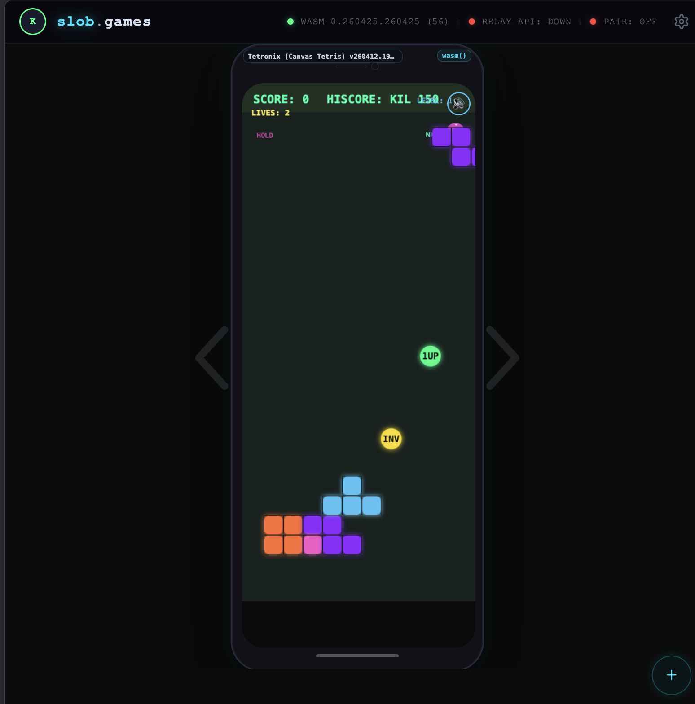

slob.games
Lightweight browser arcade space. Current homepage presents a Snake game experience with keyboard/tap controls and score tracking.
- Immediate play loop with simple controls.
- Arcade vibe suitable for quick web demos.
- Good fit for minimalist game experiments.